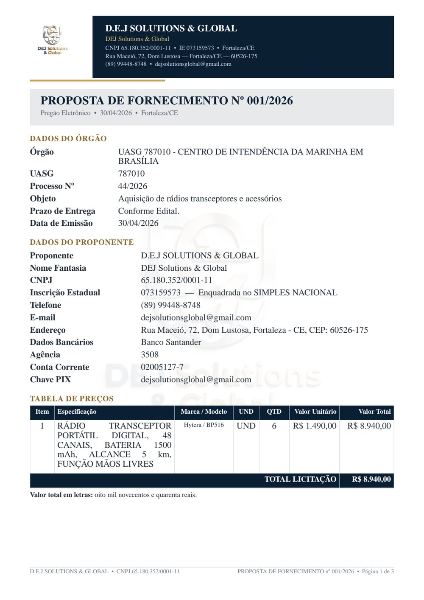
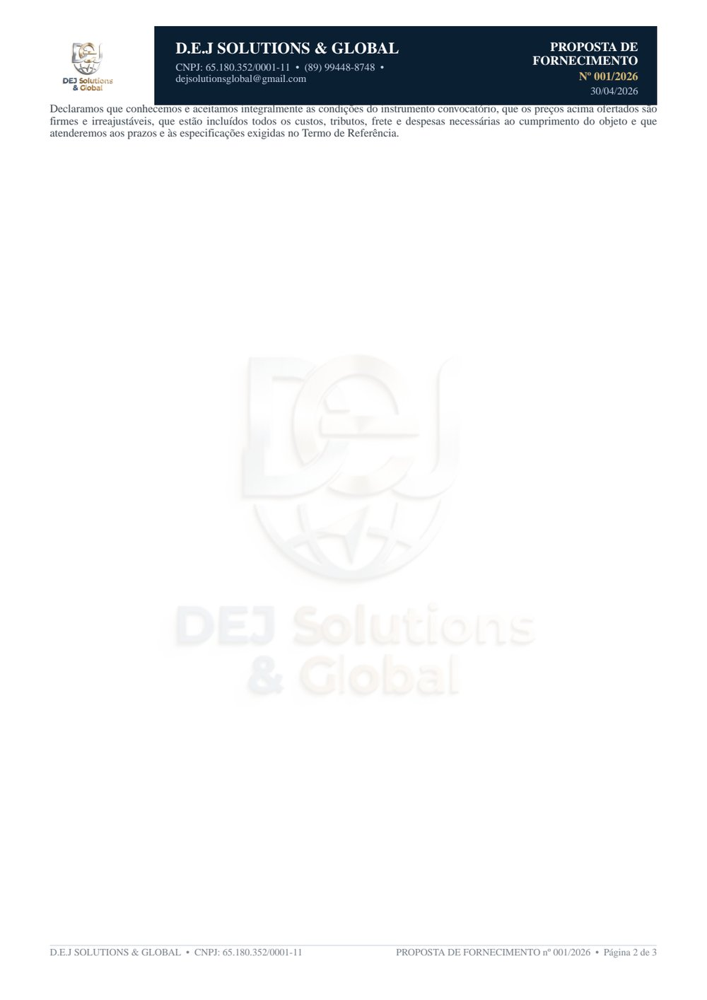
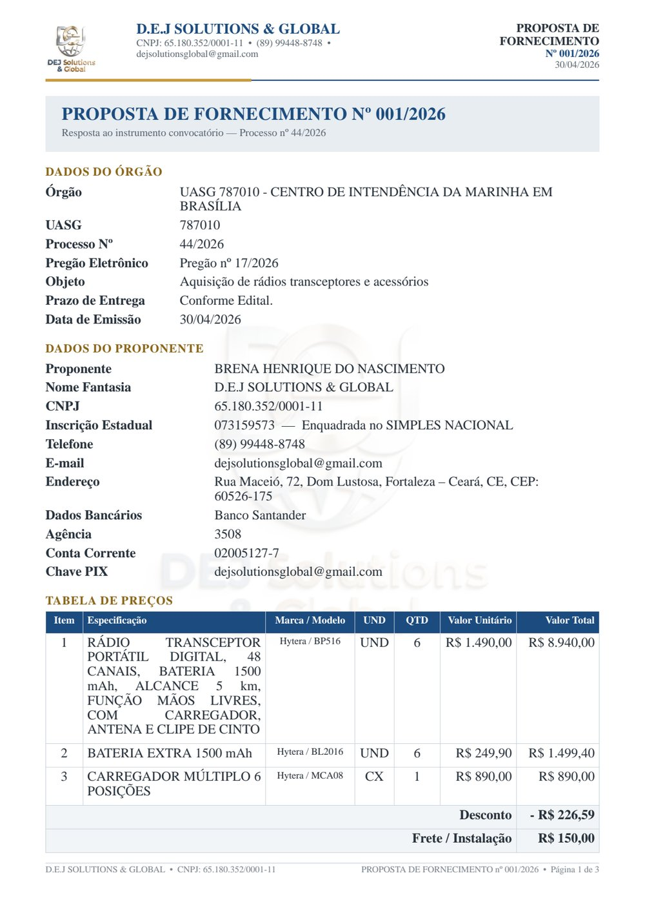

Importação da planilha
Envie o arquivo .xlsx, .xls, .csv ou .ods. O sistema
reconhece as colunas do modelo (e variações de nome), avisa sobre linhas com problema e deixa
você escolher os itens.
O LicitaPro importa os itens da planilha, monta a proposta de licitação e o orçamento comercial com a sua marca, as fotos dos produtos, o valor total por extenso e o bloco de assinatura — e entrega tudo em PDF em Times New Roman pronto para enviar.
Já dá para usar: o endereço do GitHub Pages abre o próprio sistema, funcionando direto no navegador (modo local — sem servidor). Nesse modo os documentos ficam salvos no seu navegador, com backup em arquivo. Para vários usuários com login e senha, publique com servidor Node — veja como publicar.
| Item | Especificação | QTD | Valor |
|---|---|---|---|
| 1 | RÁDIO TRANSCEPTOR PORTÁTIL DIGITAL | 6 | R$ 8.940,00 |
| 2 | BATERIA EXTRA 1500 mAh | 6 | R$ 1.499,40 |
Envie o arquivo .xlsx, .xls, .csv ou .ods. O sistema
reconhece as colunas do modelo (e variações de nome), avisa sobre linhas com problema e deixa
você escolher os itens.
Órgão, UASG, processo, pregão, objeto e prazo; dados do proponente com CNPJ, inscrição estadual, SIMPLES NACIONAL, banco e PIX; tabela de preços com marca/modelo e unidade — tudo em Times New Roman.
Mesma estrutura, com identificação do cliente, validade da proposta, condições de pagamento, prazo de entrega e garantia.
Uma página de catálogo com a descrição comercial e a foto de cada produto — por link
(inclusive Google Drive, baixado na hora de gerar) ou enviando a imagem do computador
(.jpg ou .png; no modo local GIF e WebP entram convertidos). Foto que não puder ser lida
sai como —, o sistema avisa qual item ficou sem foto e o PDF nunca deixa de
ser gerado por causa de uma imagem.
Preço de custo e de venda por item, desconto, frete, lucro estimado e aplicação de margem em lote. O total sai em números e por extenso.
Numeração automática (001/2026), status de rascunho a ganha/perdida, busca, filtros, duplicar, excluir e exportar os itens de volta para planilha.
Cada pessoa entra com e-mail e senha (criptografada) e vê apenas as próprias propostas. A empresa é cadastrada uma única vez e preenche todos os documentos.
Um clique gera o arquivo com cabeçalho, logo, numeração de páginas e o nome pronto
(Proposta_001-2026_orgao.pdf), com pré-visualização na tela antes de baixar.
Páginas geradas pelo próprio sistema a partir de uma proposta de exemplo.



O arquivo Modelo_Importacao_Itens_LicitaPro.xlsx é gerado pelo próprio site
(aba Painel → Baixar planilha) e traz uma aba com instruções e exemplos.
| Coluna | Obrigatória | O que preencher |
|---|---|---|
Numero_Item | não | número do item conforme o edital |
Descricao_Edital | sim | descrição exata do item no edital |
Unidade | não | UND, UN, CX, PCT, M, KG... |
Quantidade | sim | quantidade solicitada |
Valor_Referencia | não | valor unitário estimado no edital |
Preco_Custo | não | quanto você paga no fornecedor (uso interno) |
Preco_Venda | não | valor unitário ofertado |
Marca_Modelo | não | marca e modelo ofertados |
Foto_Produto | não | link da imagem ou upload (.jpg/.png) no site |
Descricao_Catalogo | não | texto comercial do catálogo |
Link_da_compra | não | link onde você compra (não sai no PDF) |
Valores podem ser digitados como número (1490,00) ou texto (R$ 1.490,00).
São dois caminhos. Modo local (GitHub Pages): o endereço já abre o sistema e roda
tudo no navegador — ótimo para uso individual, sem instalar nada.
Com servidor: login e senha para várias pessoas, cada uma com os seus documentos,
e os dados guardados no servidor. O repositório já vem com
render.yaml, railway.json, Procfile e Dockerfile
para isso.
O endereço do GitHub Pages abre o sistema em modo local: importe a planilha, gere o PDF e baixe o backup. Os documentos ficam salvos neste navegador.
Abrir o sistemaEntre em render.com, conecte o GitHub e escolha New + → Blueprint apontando para
o repositório licitapro. O resto é lido do render.yaml.
Preencha LICITAPRO_ADMIN_EMAIL, LICITAPRO_ADMIN_SENHA e
LICITAPRO_ADMIN_NOME. Esses dados serão o primeiro acesso ao sistema.
Acesse a URL gerada, cadastre a sua empresa, importe a planilha e gere o PDF.
Guarde a pasta de dados (/var/data ou data/) — nela ficam o banco, os uploads e o cache.
Outras opções: Railway (com volume em /var/data),
uma VPS com docker run ou npm start com PM2, ou ainda rodar na sua
máquina e expor por túnel temporário. O passo a passo completo está no
README.
Sobre os dados: em planos gratuitos o disco costuma ser apagado a cada reinício — ótimo para testar, mas para uso real prefira um disco persistente ou uma VPS.
git clone https://github.com/marcossilva023l20/licitapro.git
cd licitapro
npm install
npm start # abre em http://localhost:3000
npm run testes # 39 testes automatizados
npm run paginas # regenera o index.html do GitHub Pages
npm run fontes # regenera as métricas da fonte Times
npm run modelo # gera a planilha-modelo (.xlsx)
npm run usuarios # lista usuários / troca senhaNa primeira execução o sistema cria o primeiro acesso e mostra e-mail e senha no
terminal (e em data/primeiro-acesso.txt).